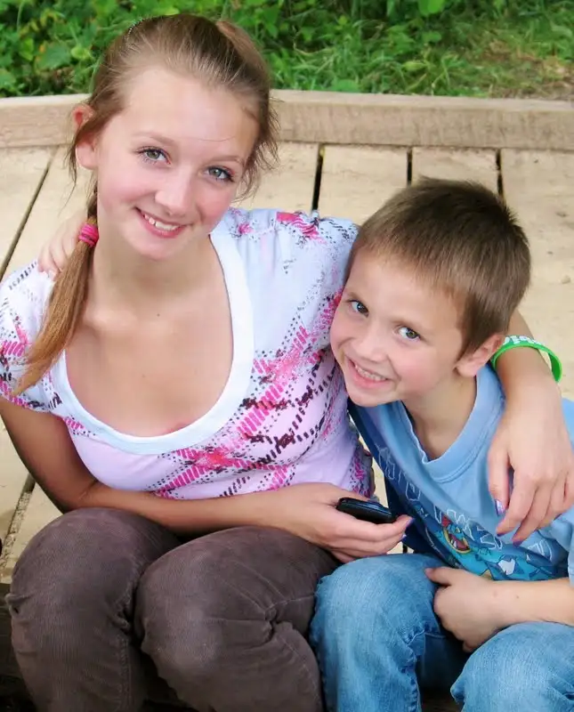
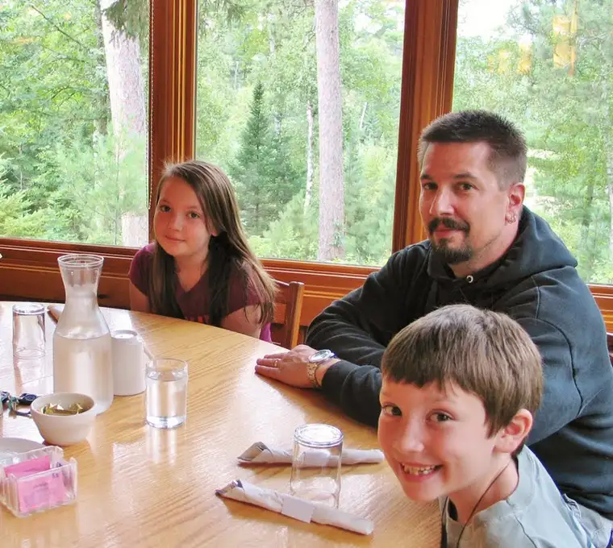
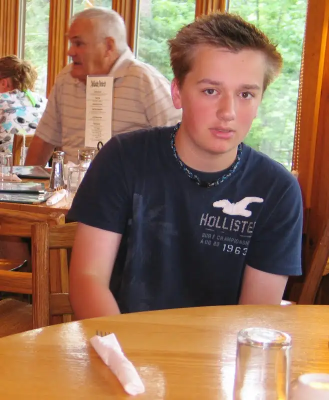
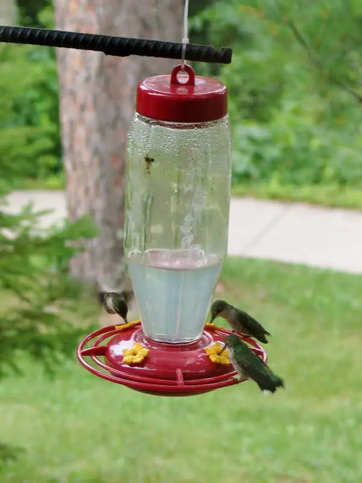
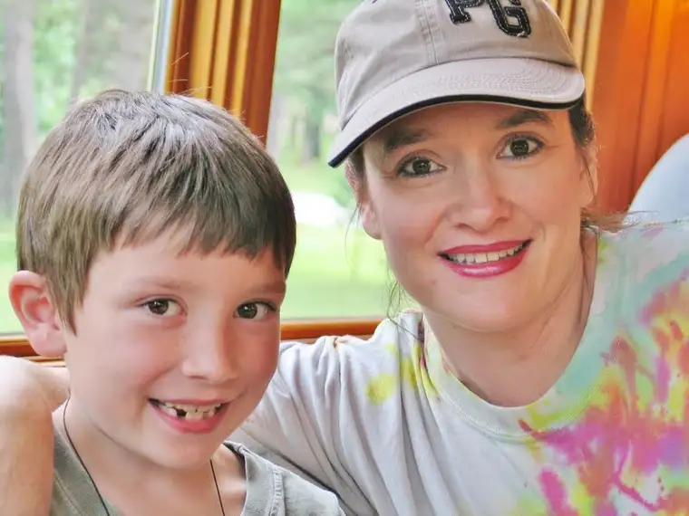

{kind=link}
Our family just returned from a brief end-of-summer getaway; a reprieve just before the onset of backpacks being flung onto shoulders, principals’ voices resounding over loudspeakers and teachers asking children to write essays about their summertime adventures.
 |
| Kiddos #2 and #5 just after arriving at Itasca State Park |
{kind=link}
I can’t guess what memories are churning most vibrantly in the hearts of my five children. They are as varied, no doubt, as each child’s fingerprints. But I do have some of my own that have lit my heart afire. One is so fresh I can almost reach out and touch it. I can in part through the photos I was blessed to snap during a quiet moment of observation.
The memory happened, as they often do, while thinking on other things. We were wrapping up one phase of our visit to the park, seated in a round corner table by the window of a restaurant.
 |
| Our corner table with the incredible view (with Daddy and Kiddos #s 3 and 4) |
{kind=link}
The greenery around was captivating enough…
 |
| Kiddo #1 (the feeder was located just behind him…) |
{kind=link}
but then my eyes caught the flutter of something: hummingbirds at a feeder just outside the window. For the rest of our time there, I sat mesmerized by the exquisiteness of these beautiful creatures. They are so tiny, and so fast. At times, their wings were going so quickly they seemed to disappear altogether.
 |
| See the wings of the little bird to the left? Yeah, not so much, right? Too fast! |
{kind=link}
I could have stayed there for hours watching them.
 |
| Peace Garden Writer and Kid #4 |
{kind=link}
It seems fitting to allow a favorite poet to help me put words to what I experienced as I hung with my family and the hummingbirds for a short while. Nature has so much to say to us if we can be still just long enough to watch…and listen.
{kind=link}
{kind=link}
Summer Story by Mary Oliver (from the poetry book Red Bird)
When the hummingbird
sinks its face
into the trumpet vine,
into the funnels
of the blossoms
and the tongue
leaps out
and throbs,
I am scorched
to realize once again
how many small, available things
are in this world
that aren’t
pieces of gold
or power——-
that nobody owns
or could but even
for a hillside of money—–
that just float
in the world,
or drift over the fields,
or into the gardens,
and into the tents of the vines,
and now here I am
spending my time,
as the saying goes,
watching until the watching turns into feeling,
so that I feel I am myself
a small bird with a terrible hunger,
with a thin beak probing and dipping
and a heart that races so fast
it is only a heart beat ahead of breaking——
and I am the hunger and the assuagement,
and also I am the leaves and the blossoms,
and, like them, I am full of delight, and shaking.
Q4U: When did nature last speak to you, and what did she have to say?